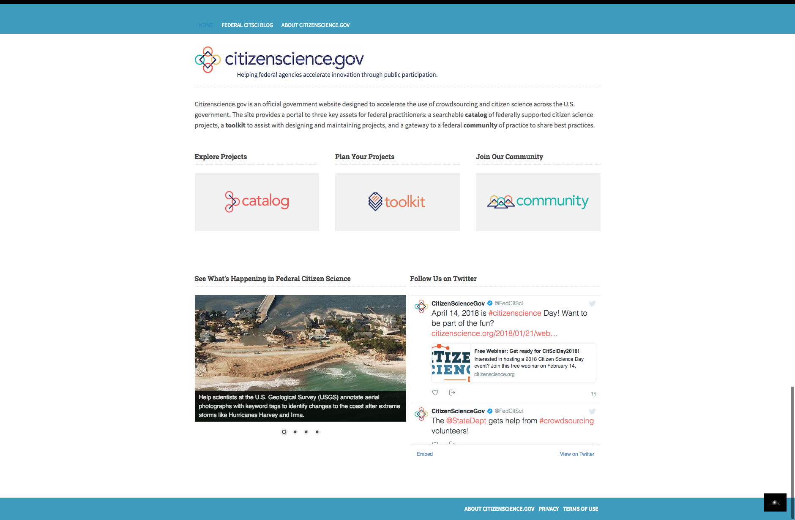

CitizenScience.gov
Redesign of CitizenScience.gov using human-centered design principles working collaboratively with leadership and the Crowdsourcing and Citizen Science Community of Practice to improve product usability, accessibility, and experience. Planned and lead 2 in-person, workshops using qualitative research methods to gain insights and feedback on CitizenScience.gov user experience increasing traffic by 300%.

BEFORE